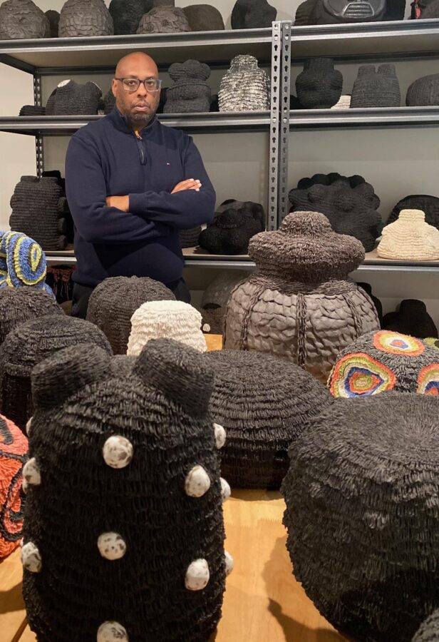

Curator Walk Through with Donté K. Hayes
Meet Donté K. Hayes, the curator of February’s group show, Ancestral Futures. Visit ARC from 6pm – 8pm on February 20th. Donté will lead a walk through the gallery and hold a Q&A for open discussion.
What does it mean to be a good future ancestor? How might today’s personal, cultural, social, and or environmental actions become legacies for those who come after us? This juried exhibition, curated by artist and ceramicist Donté K. Hayes, shows works that meditate on wisdom, intentionality, and the responsibility of shaping a world that extends beyond ourselves.
Artworks in this exhibition explore:
The role of ancestral wisdom and traditions in shaping the present.
Cultural memory, resilience, and preservation.
Social responsibility, healing, and intergenerational connection.
Personal reflections on intentional living and self-cultivation.
Environmental stewardship and sustainability as acts of care for the future.